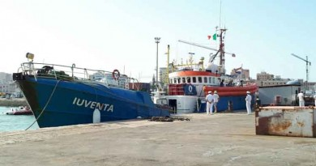

Le strumentazioni a bordo della ?Iuventa? potrebbero essere state oggetto di un attacco hacker da parte di gruppi anti-migranti

7 Agosto 2017 - Le strumentazioni a bordo della ?Iuventa?, la nave della ong tedesca Jugend Rettet sequestrata la scorsa settimana su richiesta della Procura della Repubblica di Trapani, potrebbero essere state
Erice

Presentato stamattina nell?Aula consiliare del Palazzo Municipale di Erice il programma della stagione estiva
Favignana
I disagi causati dagli insufficienti collegamenti marittimi sono stati sollevati dall?Amministrazione delle Egadi
Erice
Da circa dieci giorni si registrano gravissimi problemi di erogazione idrica nella zona di Pizzolungo
Trapani
Trapani, già ?città del sale e della vela?, da alcuni giorni è ufficialmente anche città ?dell?accoglienza?.
Trapani
Grandi novità per gli studenti che fanno parte del programma di studio internazionale Erasmus.
Trapani
Oltre al prefetto Giuseppe Priolo erano presenti i responsabili provinciali delle forze dell?ordine
Custonaci
Lo spettacolo è dell?attrice, autrice e cantante Isabella Carloni
Erice
Il ruolo della scuola consiste nel programmare una serie di appuntamenti serali
Trapani
Quest?anno Trapani è stata designata come sede della manifestazione regionale
Trapani
La manifestazione ha rappresentato il momento conclusivo del progetto concepito con sinergia tra la scuola e l?Esercito